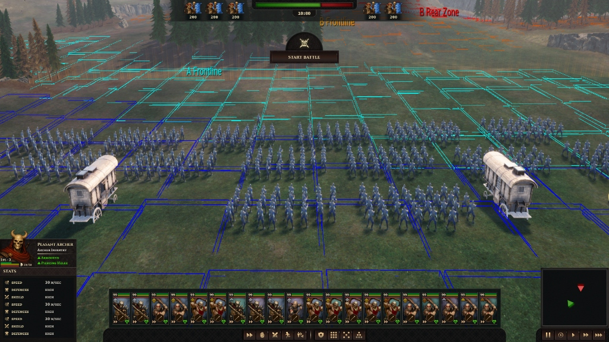

SEVERNA:
BLOOD & BETRAYAL
Designing selected in-game UI elements and widgets to support gameplay interactions and player experience.

ABOUT THE PROJECT
Severna: Blood & Betrayal is an in-development game project where I worked on designing and refining selected in-game UI elements and widgets.
My focus was on creating interface elements that support gameplay interactions, communicate important information clearly, and maintain a consistent visual experience throughout the game.
MY CONTRIBUTION
My work focused primarily on the game’s interface layer and selected UI systems, including designing widgets, refining layouts, and creating interface elements that improve clarity and support the overall gameplay experience.
PROJECT AVAILABILITY
Severna: Blood & Betrayal is currently in development, so I’m unable to publicly share additional project details or a larger selection of in-game work at this time.
Selected visuals and further details can be shared during an interview or upon request.